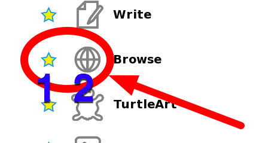
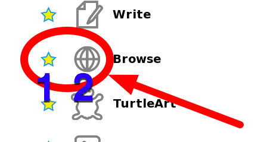
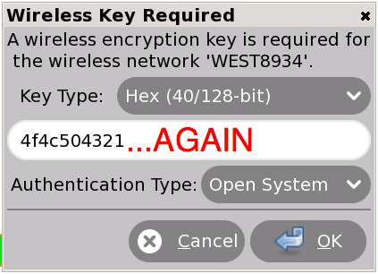

Give Me the Internet, Please
The designers of the XO laptop designed it for primarily wireless access, so it can work well in developing nations, where it is faster and less expensive to introduce wireless connections than wired ones.
XOs are designed to connect to other XOs using a mesh network. A mesh network allows nearby XO laptops to talk to one another directly (wirelessly) without the need for a traditional Internet Service Provider (ISP).
The XO also supports wireless connections for direct Internet connection. Collaboration with others on Activities does not require an Internet connection.
There are different ways to connect to the Internet:
- using a wireless access point such as a WiFi hotspot at a library or coffee shop, or a location that has a wireless router such as your house
- using a "School Server" provided by your school system
- using a USB-to-Ethernet cable that plugs into a cable modem, DSL modem, or local network such as those offered at a home or workplace
Before you connect
If you are going to connect at home, check with your ISP to find out if your network is protected with a password. Your router also has a password which can be found in its documentation. Become familiar with your wireless router settings so that you can troubleshoot the connection if needed. The Troubleshooting chapter offers some assistance.
Check your current connection status as shown in the lower right area on the Frame. If you have connected successfully in the past, the XO "remembers" the connection and will connect again in the future.

Go to a location with your XO where you know there is a Wireless Access Point (WAP) nearby.
Find out the network name (or SSID) and its password, if it is secured with a password. The XO refers to this as the Wireless Key.
Connecting to the network
- Go to the Neighborhood View.

-
In the Search field, enter the name of the network to which you want to connect.

Or roll the pointer over one of the network access circles until you recognize the name of the wireless network.
-
Connect by clicking the center of the circle.

Wireless access points are represented by circles. The fill level indicates signal strength.
Access points that require keys have a "locked" icon.

Access points that you have successfully connected to become "Favorites" as indicated by a star icon.
Access points that represent the Mesh network are indicated with a target icon, with one for channel 1, one for channel 6, and one for channel 11. Hover your pointer over the access point to see if you're already connected or if you need to click to connect.
 = Connected
= Connected
 = Not yet connected
= Not yet connected
-
The name of the access point is displayed when you hover over it.

The center of the circle blinks while the laptop is trying to connect.
Enter the wireless key if prompted. You might need to ask your teacher or parent for the wireless key.

While the XO is connecting to the network, the Access Point blinks.
-
Once you are connected, the menu on the circle in the Neighborhood View changes, and you can see a circle in the lower right area of the Frame.
If the attempt to connect fails, the circle stops blinking, but the access point icon does not appear in the Frame. Click the circle in the Neighborhood View to try again—it sometimes takes 2–3 tries to connect.
- To disconnect from the network, hover the pointer over the access point and click Disconnect on the menu.
- Once your XO is connected, you can return back to the Home View and launch the Browse Activity.

-
 

If you have not yet added the Browse Activity to your favorites, click the List View (left) and scroll to Browse. Add the Activity to your favorites list by clicking the star next to it (1). Launch Browse for the first time by clicking the globe icon (2). Next time, you can use the freeform view to launch it (as is done in the next step). - If you have added the Browse Activity to your favorites list, you can click the globe icon to open the Browse Activity and test your access to the Internet.
Click the globe icon to launch the Browse Activity.

If you cannot see an Access Point with a name that you recognize, the wireless antenna might be too far away, or the Access Point might not be working properly. For more information, or if you have difficulties getting a network connection, refer to the Troubleshooting chapter.
More information about your XO's connection:
- Your Wireless Access Point has a network name, also called an SSID, that displays in the Neighborhood View. The XO cannot recognize SSIDs that are hidden, which is configured on the access point. Refer to the Troubleshooting chapter for more information about hidden SSIDs.
- If you are connected to the Internet, your XO laptop cannot be on the mesh network, and if your XO is on a mesh network, it cannot simultaneously connect wirelessly to the Internet.
- If the XO cannot find an available Internet network point after five minutes of searching, it defaults to Mesh Network 1, which enables your XO laptop to connect to other nearby XO laptops.
- Please be patient; it can take your XO up to a minute to find newly visible networks.
- Sometimes you'll be asked to enter the "Wireless Key" again. Enter it again and repeat until your connection is complete.
 - For more information about connecting, please see the Support FAQ online.
Author : GiveMeTheInternet
© Anne Gentle 2008
Modifications:
Brian Jordan 2008
Caryl Bigenho 2008
A Holt 2008
Janet Swisher 2008
Sandy Culver 2008
S Page 2008
Tom Boyle 2008
License : General Public License
Produced in FLOSS Manuals (http://www.flossmanuals.net)